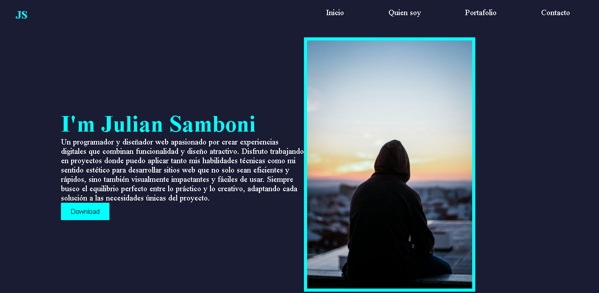

Hoja de Vida de Diseñador Web
Descripción del Proyecto: Hoja de Vida de Diseñador Web es un proyecto que muestra mi capacidad para diseñar y desarrollar una página de currículum web profesional utilizando HTML y CSS. Este proyecto destaca mis habilidades en diseño web, organización de contenido y creación de interfaces visualmente atractivas. La hoja de vida incluye secciones para experiencia laboral, habilidades, educación y proyectos destacados, todo presentado de manera clara y efectiva.
Tecnologías Utilizadas: HTML, CSS.
Desafíos y Soluciones: Uno de los desafíos fue asegurar que la hoja de vida se viera bien en una pantalla de computador. Implementé técnicas de diseño responsivo utilizando media estilos en CSS para garantizar que el contenido se ajustara adecuadamente y se mantuviera legible en dispositivos móviles y de escritorio.
Captura de pantalla de la hoja de vida de diseñador web
Reconocimientos: Este proyecto ha sido reconocido en el taller web por su diseño limpio y profesional, y ha servido como una sólida representación de mis habilidades en diseño web.